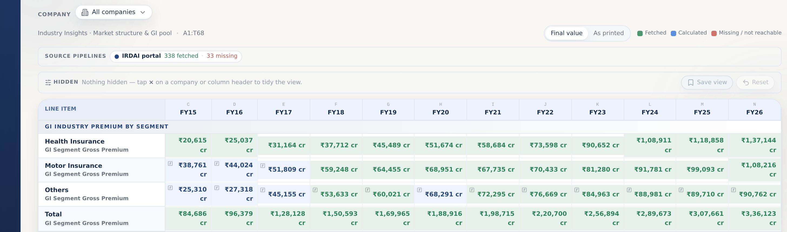
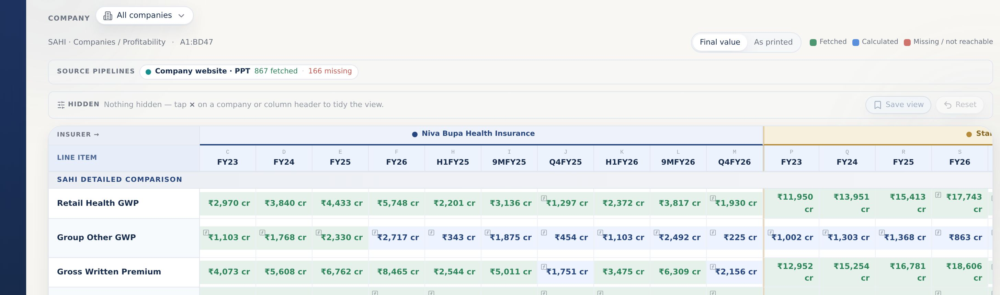
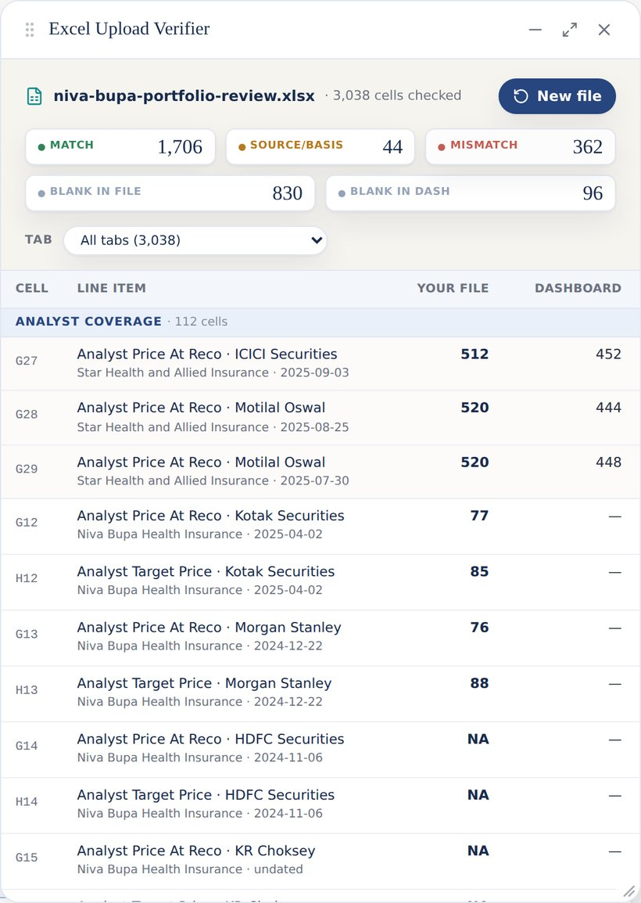
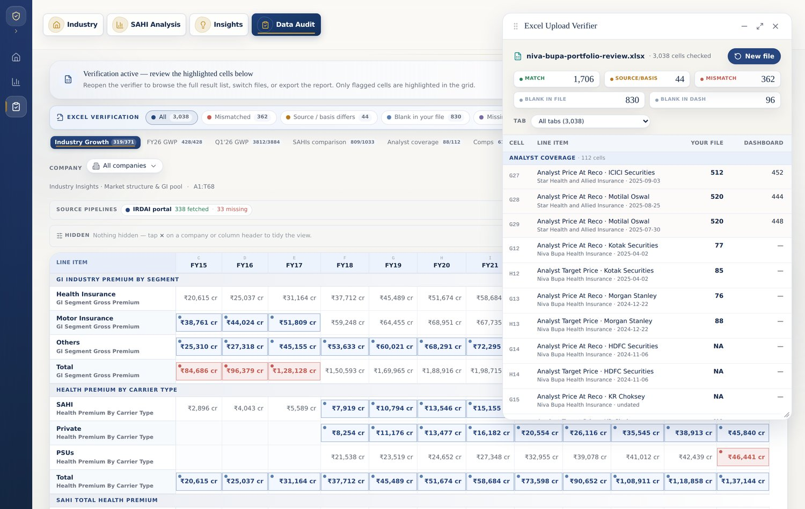

Fully implemented features, verified changes, and visual walkthrough
Date2026-06-24
Prepared forParagon Partners (India), by Munshot
Coverage9 modules · 56 changes
Walkthrough11 feature pages
All 56 changes implemented · 0 pending
Data Audit
Cell-for-cell mirror — now mostly green
UPDATED THIS WEEKIMPLEMENTED


Every template cell is mirrored and checked against its source — the grid now reads mostly green (fetched & verified), with only a few cells still pending.
A source-pipeline strip is honest about what is in vs missing (e.g. IRDAI portal — 338 fetched, 33 missing).
Tap × on any column or company to tidy the view; hidden items sit in a tray and restore in one tap, with Save view / Reset.
Each company is colour-coded into its own block, and any cell opens its full source on click.
Note: Most cells are now fetched & verified (green); the source-pipeline strip stays honest about the few still pending.
Upload a workbook, compare — then jump to any cell
IMPLEMENTED


Drop in your Excel and every cell is checked, line by line, against the dashboard — all in your browser, nothing leaves your computer.
Five clear outcomes sit on top — Matched, Source / basis differs, Mismatched, Blank in your file, Missing in the dashboard.
Every result row is clickable — it jumps straight to that exact cell in the Data Audit grid and highlights it, so there’s no manual searching.
The verifier is a movable, resizable window beside the grid that remembers recent files to re-check in one click. Sample run: 1,706 matched, 44 source / basis, 362 mismatched, 830 blank-in-file, 96 blank-in-dashboard.